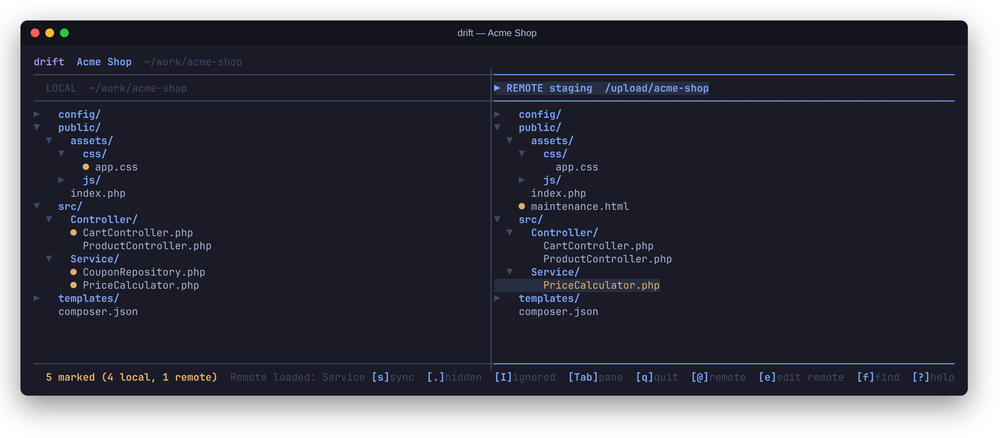
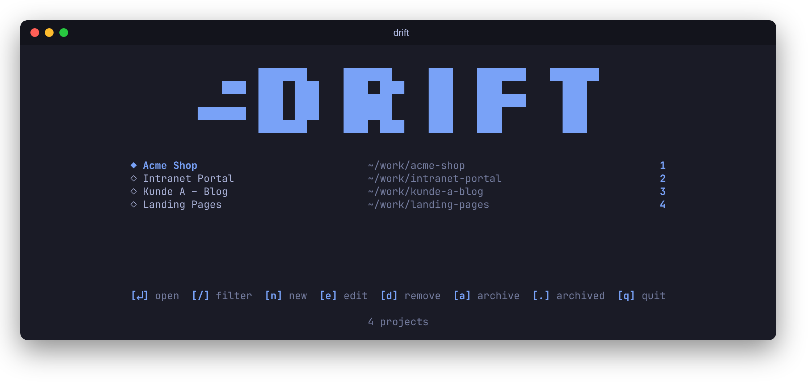

Diff and sync files with your server
drift is an open-source terminal tool. It compares your local project with the server line by line and transfers only the changes you approve, over SFTP, FTP or FTPS.

in action
See every change before you upload
The diff view shows added and removed lines with syntax highlighting. For each file you choose upload, download, delete or skip. drift suggests a direction from the modification times.

Local project and server side by side
@ connects the right-hand pane to a host. Space marks files or whole directories, and s opens the comparison.


Several projects, each with its own hosts
drift dash opens the project dashboard. Each project has its own hosts and path mappings. In the file browser, P switches projects.


One upload in 27 seconds
The recording shows file selection, the diff and a confirmed upload. On the next comparison, the local and the remote file match.
What else does
Edit remote files in your own editor
drift uploads the file only after you confirm, and first checks whether someone changed it on the server.
Map paths per host
A local directory can live under different paths on staging and production.
One connection for several projects
Projects on the same server share its connection and credentials.
Verify FTPS certificates
Exceptions for unknown certificates last for the session or permanently.
Nothing written to your project
Configuration lives in
~/.config/drift/. drift respects your.gitignore.Passwords from environment variables
drift creates host files with mode
600. A password field can hold$ENV_VARinstead of the password.
Install
You need Linux or macOS, Go 1.25 or newer, and Git. Go's binary directory must be in your PATH.
go install github.com/WariKoda/drift@latest
Run drift in your project directory. H opens the host manager and n adds your first host. ? shows the keys on every screen.
Frequently asked questions
What is drift?
drift is a free, open-source terminal program for Linux and macOS. It shows the differences between your local project and a server as a line-by-line diff and transfers only the files you approve, over SFTP, FTP or FTPS.
Who is drift for?
Developers who deploy websites or applications to shared hosting, staging or production servers over SFTP or FTP and want to see what changes before they upload.
Which protocols does drift support?
SFTP, FTP and FTPS. With FTPS, drift verifies the server certificate. You can allow exceptions for one session or permanently.
Does drift run on Windows?
No. drift runs on Linux and macOS.
How is drift different from FileZilla or rsync?
FileZilla transfers files but shows no line-by-line diff before an upload. rsync needs SSH access and rsync on the server, and it does not support FTP. drift shows the diff of every file and transfers it only after you approve.
Does drift add files to my project?
No. Configuration lives in ~/.config/drift/. drift leaves out paths from your .gitignore during a comparison unless you include them with i.
Where does drift store credentials?
In the host files under ~/.config/drift/projects/, which drift creates with mode 600. Instead of a password, a host file can name an environment variable such as $FTP_PASSWORD.
How much does drift cost?
Nothing. drift is MIT licensed, and the source code is on GitHub.